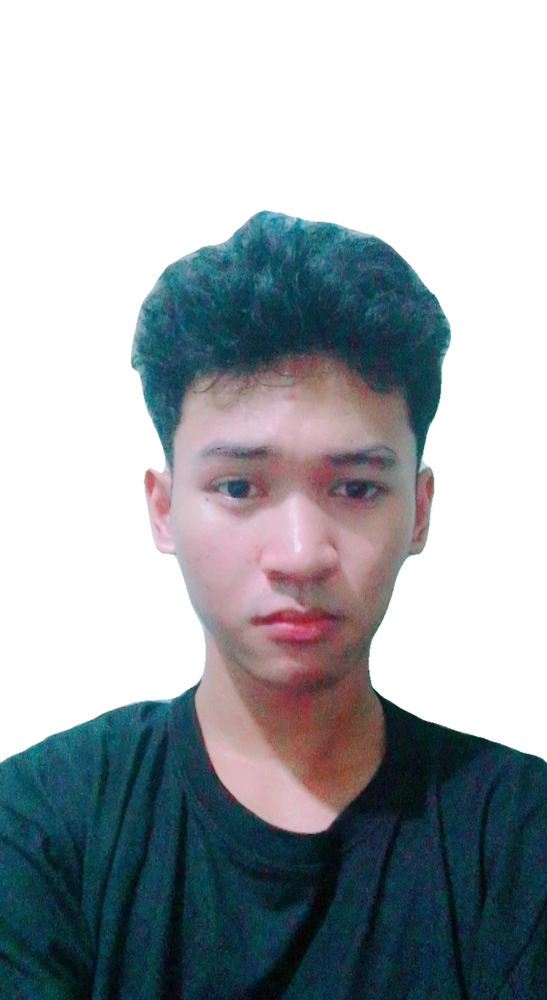

HI THERE I'M
JOHN VOLTER BARCIAL
BSIT STUDENT
Hi! I'm JV, a BSIT 2nd-year student passionate about technology and building creative digital projects. I enjoy learning web development and exploring new tools that help me grow as a developer.

About Me
I'm a dedicated IT student passionate about software development.
Currently in my second year, I'm learning programming, databases,
and web design. My goal is to become a full-stack developer creating
innovative solutions to real-world problems.
When I'm not coding, you can find me exploring new tech trends,
collaborating on projects with classmates, or working on personal
coding challenges to sharpen my skills.
My Skills
Web Development
- HTML (basic)
- JavaScript (basic)
- CSS (basic)
Programming
- Python (basic)
- Java (basic)
- SQL & Databases (basic)
- C# C sharp (basic)
- Problem Solving
Tools & Others
- Figma (UI/UX)
- Graphic Design
- Team Collaboration
- Project Management
My Hobbies & Interests
Coding Projects
Building personal projects and experimenting with new technologies.
Gaming
Strategy and puzzle games that challenge my gaming skills
Tech Reading
Reading tech blogs and watching to stay updated
Music
Listening to music while coding for focus and creativity
Video editing
Editing random videos I found online just to pass the time
Slepping
Sleeping peacefully to relax my mind and recharge my energy